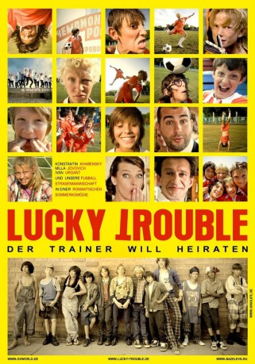

#6468 Lucky Trouble - Der Trainer will heiraten
 
 IMDB-Wertung: 6.2 / 10
IMDB-Wertung: 6.2 / 10  Metascore: 0
Metascore: 0 
Aus einer verschlafenen Küstenstadt zieht es Schullehrer Slava Stürmer (Konstantin Khabensky) ins große Moskau, wo er hofft als Romanautor Karriere zu machen. Stattdessen hat er erst einmal einen anderen Erfolg vorzuweisen. Er erobert das Herz der schönen Nadya (Milla Jovovich). Schnell wird die große Traumhochzeit geplant, doch dann kommen Hindernisse auf. Slava sitzt plötzlich in seiner verschlafenen Küstenstadt fest, wo man ihn nach einer Verwechslung kurzerhand zum Fußballtrainer ernannt hat und nun nicht mehr weglassen will…
Jahr: 2011
Dauer: 100 Minuten
FSK: 6
Land: Russland Studio: GV WorldTonspuren:
Untertitel:
Auflösung: 1080p (1920x816) Größe: 9308 MB
Genre: Komödie, Liebe, Sport
Regisseur: Levan Gabriadze
Drehbuch: Roman Nepomnyashchiy
Soundtrack:
Darsteller:
 Konstantin Khabenskiy als Kolotilov
Konstantin Khabenskiy als Kolotilov Milla Jovovich als Nadya
Milla Jovovich als Nadya- Ivan Urgant als Danya
- Sergey Garmash als Khlybustin
- Vladimir Menshov als Tryokhgolovich
- Galina Jovovich als Mama Nadi
- Aleksandr Kerzhakov als Aleksandr Kerzhakov
- Aleksandr Robak als Botsman
- Roman Madyanov als Inspektor DPS
- Klarissa Barskaya als Gostya na svadbe , uncredited
- Olga Tumaykina als Dalinska
- Sergey Selin als Mer
- Sergey Shekhovtsov als Uchastkovyy
- Tatyana Lyutaeva als Podruga mamy Nadi
- Aleksandra Nazarova als Babushka
- Taisiya Vilkova als Tasya
- Savva Gusev als Futbolnaya komanda 'Palchiki' - Kara Sasha
- Mikhail Nikolskiy als Futbolnaya komanda 'Palchiki' - Chuma
- Dmitriy Gogu als Futbolnaya komanda 'Palchiki' - Kosoy
- Ivan Dyomin als Futbolnaya komanda 'Palchiki' - Darik
- Gleb Stepanov als Futbolnaya komanda 'Palchiki' - Shpala
- Aleksandr Rakhimbekov als Futbolnaya komanda 'Palchiki' - Kukaracha
- Oleg Maslennikov als Futbolnaya komanda 'Palchiki' - Kopchik
- Dzhumber Ardishvili als Futbolnaya komanda 'Palchiki' - Chetyryokhglazadze
- Mikhail Gostishchev als Futbolnaya komanda 'Palchiki' - Rinat
- Yuriy Gostishchev als Futbolnaya komanda 'Palchiki' - Marat
- Ivan Slesarenko als Futbolnaya komanda 'Palchiki' - Chirik
- Ilya Sologub als Futbolnaya komanda 'Palchiki' - Kozyulya
- Chicha als Futbolnaya komanda 'Palchiki' - Chicha
- Vyacheslav Gorokhov als Arbitr na pole
- Ivan Saprykin als Arbitr na pole
- Sergey Tikhonov als Arbitr na pole
- Svetlana Sadikova als Molodaya zhenshchina
- Boris Vernigorov als Prodavets arbuzov
- Aleksandr Farber als Gerr Myuller
- Konstantin Stepanov als Gerr Lyunder
- Vitaliy Filippovykh als Khozyain gruza
- Anna Guseva als Aptekarsha
- Paata Patskhveriya als Starsheklassnik
- Leonid Yarygin als Napadayushchiy komandy 'TsAO'
- Olga Kalashnikova als Dezhurnaya na vokzale
- Alexander Yurchikov als Provodnik
- Fyodor Savelev als Moryachok
- Dmitriy Zuev als Okhrannik na pirse
- Pyotr Dranga als Bayanist
- Anton Rebnyuk als Ansambl na svadbe
- Nikolay Sarabyanov als Ansambl na svadbe
- Aleksey Kravtsov als Ansambl na svadbe
- Yuriy Topchiy als Ansambl na svadbe
- Ruslan Gryaznov als Komanda 'TsAO Moskva'
Datei: X:\2011(G-M)\Lucky Trouble - Der Trainer will heiraten (2011, FSK6, 1920x816).mkv seit 27.06.2017
Festplatte: HD 2011(G-Z)
 Es gibt insgesamt 100 Filme in der Gruppe '2011(G-M)'
Es gibt insgesamt 100 Filme in der Gruppe '2011(G-M)'